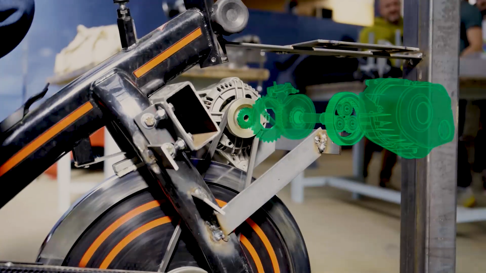
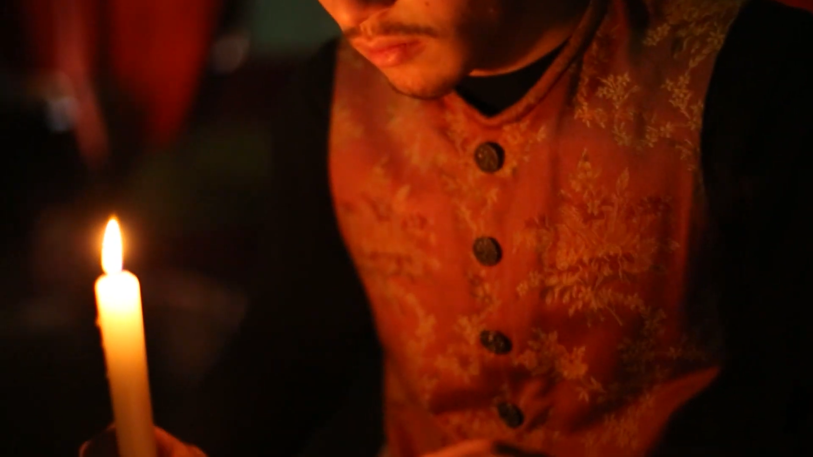
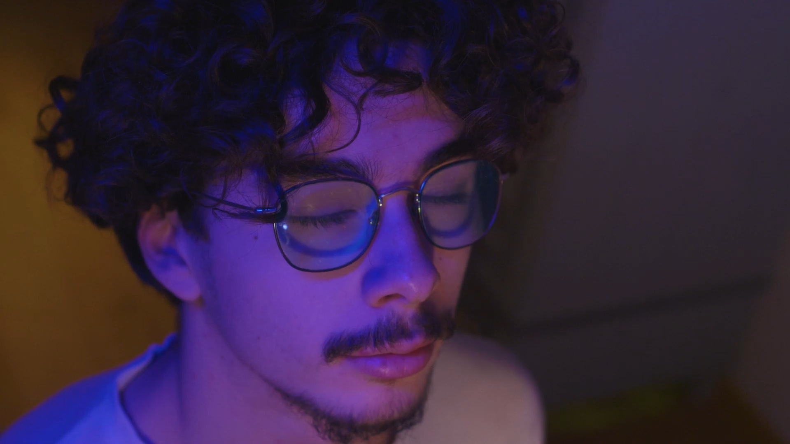
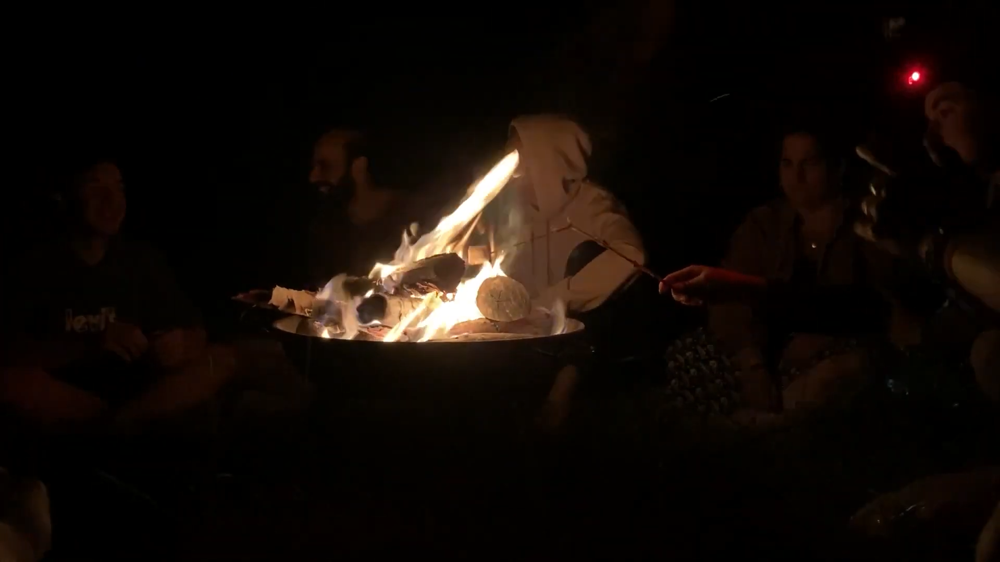
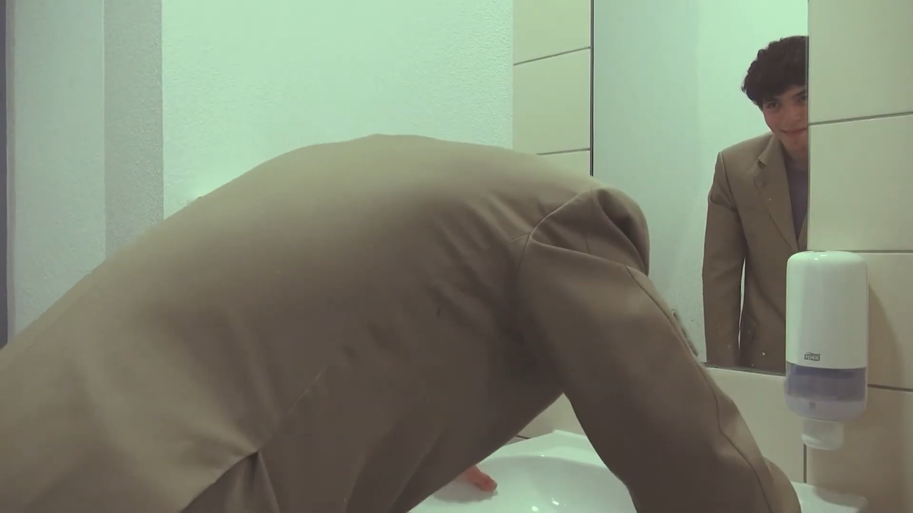

Yanis OBERLÉ
Animation d'un logo trouvé sur Dribbble
Travail sur les mouvements aléatoires de la queue et la physique des rebondsAnimation d'une illustration
Tout premier projet de motion, réalisé à partir d'une illustration trouvée sur FreepikAnimation du logo d'un projet d'étudiants du Lycée Bugatti
Maîtrise de la physique, en intégrant des déformations aux rebondsPromotion d'une cagnotte lancée avec les scouts pour un projet environnemental
J'ai réalisé cette petite animation pour promouvoir une cagnotte lancée avec mon équipe scoute pour financer un projet environnemental en Géorgie. Cette viédo a été diffusée sur Facebook et Instagram.Animation avec effet diazographie
Travail d'animation de textures, de fusion avec le fond et d'expressions de mouvement. L'objectif ici était de rendre dynamique une illustration fixe.Habillage graphique d'une partie d'un vélo
Vectorisation des lettres une par une avant de les animer et de les tracker. J'ai également du détourer le pied images par images pour le placer devant l'animation du texte.Habillage graphique montrant le mécanisme interne d'un vélo électrique
Réalisé avec une illustratrice qui a dessiné les pièces dans la même perspective que le plan. Du coup, pas besoin de 3D! Juste une translation en décalé de chaque partie.Habillage graphique de particules électriques et tracking 3D d'un écran de charge sur un téléphone
Gros travail de masking pour faire passer les particules électriques derrière la structure.Voici quelques animations que j'ai pu réaliser. Il peut s'agir d'animation 100%
graphiques, comme les animations de logo ou d'illustrations, mais cela comprend aussi
l'habillage
graphique d'images en prise de vue réelle.

Vélo générateur - 2024
Un projet réalisé dans le cadre de mes études. L'objectif était de faire
la promotion d'un projet d'étudiant d'un lycée voisin. Avec ma binôme illustratrice,
nous avons choisi de miser sur l'habillage graphique et le motion design. Un choix
payant puisque cette vidéo a été retenue pour présenter le projet.

La Messe du Roi Déchu - 2023
Un court-métrage historique relatant les derniers instants du Roi Louis XVI, réalisé
dans le cadre du film de fin d'étude en option Cinéma-Audiovisuel. L'accent a été mit
sur l'étalonnage pour faire ressortir l'ambiance de l'époque et sur le montage pour
basculer d'une atmospère joyeuse à pesante.

Tim Burton Review - 2024
Cette vidéo a été réalisée dans le cadre d'un projet d'étude pour lequel il fallait
réaliser
une vidéo sur un sujet cinématographique libre. Avec mon groupe de travail, nous avons
choisi le réalisateur Tim Burton. Ce projet m'a permis d'élargir mes compétences en
effets
spéciaux, en conception de décors, en sound design, et en montage. J'ai pu également
travailler la maitrise fluide de l'anglais et de la communication non verbale pour faire
oublier la présence d'un prompteur.

Go Beyond - 2023
Cette vidéo a été réalisée dans le cadre d'un projet d'étude et consistait en la
réalisation d'une vidéo à impact positif. Le scénario prend l'histoire d'un jeune homme
qui, après une blessure qui le plonge dans une profonde depression, remonte la pente et
passe outre, d'où le titre du film. J'ai pu améliorer mes compétences en masking lors du
montage pour réaliser l'effet jour/nuit

Rétrocamps Scouts - 2023
Cette vidéo est une rétrospective du camps scout de l'été 2023 que j'ai vécu avec mon
équipe. Notre mission principale était d'aménager un espace extérieur dans une ferme
coopérative qui nous accueillait pour deux semaines. Ce projet m'a surtout demandé un
gros travail de derushage

Reflection - 2021
L'un des premiers courts métrage que j'ai réalisé et dont je suis encore fier
aujourd'hui. L'objetif était de réaliser une scène fantastique et étrange. C'est la
première fois que je manipulait les masques en montage pour l'effet de miroir. Il n'est
certes pas parfait, mais il m'a permis de comprendre le fonctionnement de cette
technique.